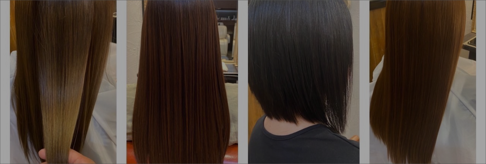

口コミ/実例
REVIEWS
REVIEWS
| 初めての方
MORE |
こだわり
MORE |
口コミ/実例
MORE |
| メニュー/料金
MORE |
カラーチケット会員
MORE |
お悩み解決
MORE |
こちらは施術されたお客様の感想をご紹介していきます。
【口コミ/実例】
髪質改善ヘアエステで自分史上最高の美髪へ
グラントはお客様の「髪をキレイにする」ことに
本気で取り組んでいます。
・目の前のお客様に集中できるように完全予約制
・しっかりカウンセリングさせてもらいお客様の髪を診断。
お悩みを把握してからご要望に沿って施術
・髪質改善するための髪と頭皮に優しい厳選された
特別な薬剤を使用しダメージを最低限におさえて美髪へ導く
・半個室のリラックス空間
こちらで紹介している実例は髪のクセ、うねり、広がり、
ダメージによる切れ毛やパサつきなどが原因で
普段のスタイリングがしづらい、
髪が綺麗に見えないなどのお悩みをお持ちの方々です。
グラントに来店して頂いた皆さんから
「自分の髪じゃないみたい」
「びっくりするほどツヤツヤ、サラサラになりました」
「毎日のお手入れがすごく楽になりました」など、
嬉しいお言葉を頂いております。
【施術実例】
実例1

クセがあり毎日のお手入れが大変なので髪をキレイにしつつ
少しでも楽にスタイリングできるようにしたいという
お悩みをお持ちのお客様
髪質はわりと柔らかくて絡まりやすく、
薬剤のダメージを受けやすい髪、濡れるとクセが特にでる。
髪の状態は2ヶ月おきのカラーリングと
普段のスタイリングで使うアイロンなどの影響で
ダメージしていて毛先のパサつきで手触りが悪くなっている。
クセがあるので広がってしまう状態。
クセがあっていつもストレートアイロンなど
でまっすぐにされている方は
一度縮毛矯正をして髪の形状をまっすぐにしてあげた方が
朝のお手入れが絶対楽になりますし、
髪に艶も出て綺麗になるのでオススメです。
こちらのお客様がされたメニューは、
髪質改善ヘアエステストレートで髪のクセをとるのと同時に
特別な薬剤で髪の内部をしっかり補修し、
残留薬剤を取り除く処置も行うことで
施術後のダメージも必要最低限に抑えられるので
良い状態が長続きします。
半年に一度の髪質改善ヘアエステストレートと
ヘアケアで今も綺麗な髪を維持してくれています。
実例2

髪はほぼストレートだけど、
ほわほわした毛があって髪に艶が出ない方や
この写真のような少しだけクセがある方も1年に1回
「髪質改善ヘアエステストレート」をやることによって
お手入れがしやすくなり、
その後のヘアエステの効果も上がります。
実例3

実例4

元々のクセはそんなに無いのですが、
明るめカラーやグレイカラーを繰り返しているので
ダメージが蓄積しているため、
それらが原因で中間から毛先にかけて広がりがあり
艶がないのがお悩みのお客様。
髪質改善ヘアエステを施術し髪の内部をしっかりと補修し
ツヤのでる成分を入れることによって、
艶感があってまとまりやすい髪に改善しました。
手触りの良さにお客様にも大変喜んでもらいました。
1度やって頂くと
髪の変化を感じてもらえると思うのですが、
日々のシャンプーや日焼けなどの外的要因で
どうしても髪の内部を補修した成分が抜けてくるので、
髪の状態に合わせて1ヶ月～2ヶ月のサイクルで
髪質改善ヘアエステをしてあげることと
ホームケアでのメンテナンスがとても大事です。
最初のご来店時より
半年後・1年後と髪をより綺麗にしていくことができます。
実例5

今まで髪のクセが強く、どこのサロンに行っても
なかなか思うようなヘアースタイルしてもらえず、
艶のあるストレートヘアーにしたいとグラントにご来店頂きました。
クセがとても強いのですが、
毛が細くて薬剤の影響を受けやすい
難しい髪質をされていたのですが、
髪質に合わせた薬剤選定と見極めで
ここまで綺麗になりとても喜んでもらいました。
こちらのお客様は６０代なのですが、
髪に艶があるだけで印象もとても変わります。
【お客様の声】